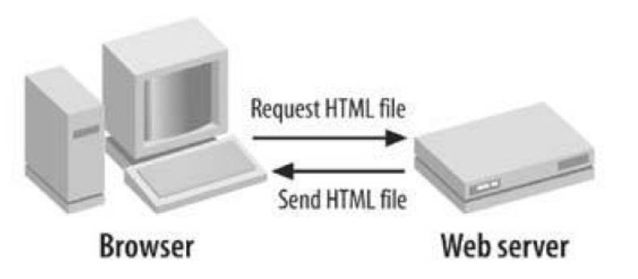
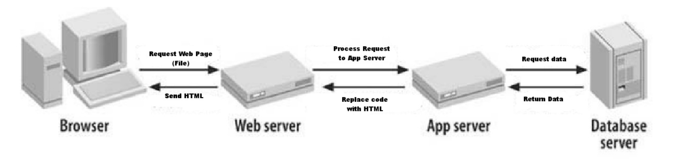
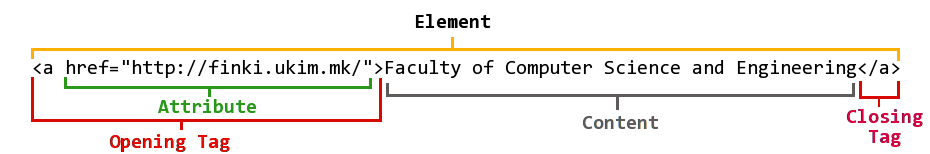
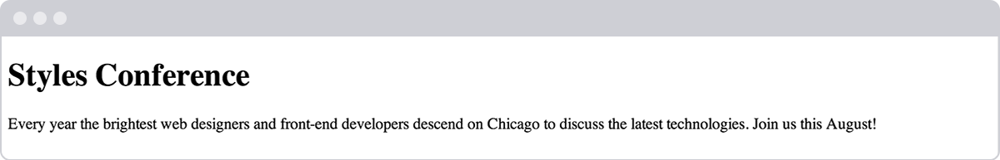
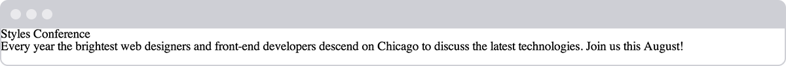

Intro to web design
Table of Contents
1 Basic concepts
Internet is a network of interconected networks, that share data and information. World Wide Web (WWW) is part of the Internet that is concerned with displaying HTML documents and their serving to the users. WWW standards are responsibility of the WWW Consortium - W3C.
1.1 Delivering web pages
We can divide the delivery of the web content in two types: static and dynamic Static sites do not process the data from clients and the information are "same" for all users (all of the users are viewing the same page).

Figure 1: Serving of static web pages
Dynamic web pages are generated individually for every user and the displayed data is different for each client.

Figure 2: Serving of dynamic web pages
When serving static or dynamic web-pages we always have a client, usually a web browser, and a web server. Web server is a specialized program, with the primary task of communicating with clients and delivering content to them. The content is usually html, css, javascript, image, multimedia or other types of files.
When working with dynamic web pages, the content that should be delivered to the client is usually generate on-the-fly by an application server. Application server uses server-side programming languages and platforms (like Java, PHP, C#/.NET, Python,…) to create the necessary content. Usually the application server communicates with a database server. The database server is responsible for storing and retrieving various data needed for the assembly of the web content.
2 Building Your First Web Page
If you can, imagine a time before the invention of the Internet. Websites didn't exist, and books, printed on paper and tightly bound, were your primary source of information. It took a considerable amount of effort – and reading – to track down the exact piece of information you were after.
Today you can open a web browser, jump over to your search engine of choice, and search away. Any bit of imaginable information rests at your fingertips. And chances are someone somewhere has built a website with your exact search in mind.
We will learn how to build websites with HTML and CSS, it is important to understand the differences between the two languages, the syntax of each language, and some common terminology.
2.1 Good vs. Bad web design?
Web design encompasses many different skills and disciplines in the production and maintenance of websites. The different areas of web design include web graphic design; interface design; authoring, including standardised code and proprietary software; user experience design; and search engine optimization.
The first and basic goal of web design is to enhance the "experience" of the user. A web page is consisted of text, pictures, multimedia data and interactive elements. ALL elements should compose a experience that is aesthetically beautiful.
A good web design is valued highly, while a bad design can be a major disadvantage. Although a good design can not be measured, there are rules that can help you build a good design. In this course we will try to explore the basics of good web design.
Bad design is pretty common. For example take the designs listed at the following link http://www.webpagesthatsuck.com/. Another example is the former design of the art department at Yale. For an art department, this is a pretty bad design. The irony is that this is an improved version of the previous site.
2.2 What Are HTML & CSS?
HTML, HyperText Markup Language, gives content structure and meaning by defining that content as, for example, headings, paragraphs, or images. CSS, or Cascading Style Sheets, is a presentation language created to style the appearance of content—using, for example, fonts or colors.
The two languages—HTML and CSS—are independent of one another and should remain that way. CSS should not be written inside of an HTML document and vice versa. As a rule, HTML will always represent content, and CSS will always represent the appearance of that content.
With this understanding of the difference between HTML and CSS, let's dive into HTML in more detail.
3 Understanding Common HTML Terms
While getting started with HTML, you will likely encounter new and often strange terms. A good listing of the terminology is given at the following link: http://www.scriptingmaster.com/html/HTML-terms-glossary.asp. Over time you will become more and more familiar with all of them, but the three common HTML terms you should begin with are elements, tags, and attributes.
3.1 Elements
Elements are designators that define the structure and content of objects within a page. Some of the more frequently used elements include multiple levels of headings (identified as <h1> through <h6> elements) and paragraphs (identified as the <p> element); the list goes on to include the <a>, <div>, <span>, <strong>, and <em> elements, and many more.
Elements are identified by the use of less-than and greater-than angle brackets, < >, surrounding the element name. Thus, an element will look like the following:
<a>
3.2 Tags
The use of less-than and greater-than angle brackets surrounding an element creates what is known as a tag. Tags most commonly occur in pairs of opening and closing tags.
An opening tag marks the beginning of an element. It consists of a less-than sign followed by an element's name, and then ends with a greater-than sign; for example, <div>.
A closing tag marks the end of an element. It consists of a less-than sign followed by a forward slash and the element’s name, and then ends with a greater-than sign; for example, </div>.
The content that falls between the opening and closing tags is the content of that element. An anchor link, for example, will have an opening tag of <a> and a closing tag of </a>. What falls between these two tags will be the content of the anchor link.
So, anchor tags will look a bit like this:
<a>...</a>
3.3 Attributes
Attributes are properties used to provide additional information about an element. The most common attributes include the id attribute, which identifies an element; the class attribute, which classifies an element; the src attribute, which specifies a source for embeddable content; and the href attribute, which provides a hyperlink reference to a linked resource.
Attributes are defined within the opening tag, after an element's name. Generally attributes include a name and a value. The format for these attributes consists of the attribute name followed by an equals sign and then a quoted attribute value. For example, an <a> element including an href attribute would look like the following:
<a href="http://finki.ukim.mk/">Faculty of Computer Science and Engineering</a>
The preceding code will display the text "Faculty of Computer Science and Engineering" on the web page and will take users to http://www.finki.ukim.mk/ upon clicking the "Faculty of Computer Science and Engineering" text. The anchor element is declared with the opening <a> and closing </a> tags encompassing the text, and the hyperlink reference attribute and value are declared with href="http://finki.ukim.mk" in the opening tag.

Figure 3: HTML syntax outline including an element, attribute, and tag
3.4 Setting Up the HTML Document Structure
HTML documents are plain text documents saved with an .html file extension rather than a .txt file extension. To begin writing HTML, you first need a plain text editor that you are comfortable using. Sadly this does not include Microsoft Word or Pages, as those are rich text editors. Two of the more popular plain text editors for writing HTML and CSS are Dreamweaver and Sublime Text. Free alternatives also include Notepad++ for Windows and TextWrangler for Mac.
For the purpose of this course, we'll be using Jetbrains Webstorm. As students of the course, you can use the faculty provided e-mail to register an account on the Jetbrains website, and request licenses for all of the Jetbrains IDE-s
All HTML documents have a required structure that includes the following declaration and elements: <!DOCTYPE html>, <html>, <head>, and <body>.
The document type declaration, or <!DOCTYPE html>, informs web browsers which version of HTML is being used and is placed at the very beginning of the HTML document. Because we'll be using the latest version of HTML, our document type declaration is simply <!DOCTYPE html>. Following the document type declaration, the <html> element signifies the beginning of the document.
Inside the <html> element, the <head> element identifies the top of the document, including any metadata (accompanying information about the page). The content inside the <head> element is not displayed on the web page itself. Instead, it may include the document title (which is displayed on the title bar in the browser window), links to any external files, or any other beneficial metadata.
All of the visible content within the web page will fall within the <body> element. A breakdown of a typical HTML document structure looks like this:
<!DOCTYPE html> <html lang="en"> <head> <meta charset="utf-8"> <title>Hello World</title> </head> <body> <h1>Hello World</h1> <p>This is a web page.</p> </body> </html>
The preceding code shows the document beginning with the document type declaration, <!DOCTYPE html>, followed directly by the <html> element. Inside the <html> element come the <head> and <body> elements. The <head> element includes the character encoding of the page via the <meta charset="utf-8"> tag and the title of the document via the <title> element. The <body> element includes a heading via the <h1> element and a paragraph via the <p> element. Because both the heading and paragraph are nested within the <body> element, they are visible on the web page.
When an element is placed inside of another element, also known as nested, it is a good idea to indent that element to keep the document structure well organized and legible. In the previous code, both the <head> and <body> elements were nested—and indented—inside the <html> element. The pattern of indenting for elements continues as new elements are added inside the <head> and <body> elements.
The structure outlined here, making use of the <!DOCTYPE html> document type and <html>, <head>, and <body> elements, is quite common. We'll want to keep this document structure handy, as we'll be using it often as we create new HTML documents.
3.4.1 Self-Closing Elements
In the previous example, the <meta> element had only one tag and didn't include a closing tag. This is intentional. Not all elements consist of opening and closing tags. Some elements simply receive their content or behavior from attributes within a single tag. The <meta> element is one of these elements. The content of the previous <meta> element is assigned with the use of the charset attribute and value. Other common selfclosing elements include:
<br><embed><hr><img><input><link><meta><param>
3.4.2 Code Validation
No matter how careful we are when writing our code, we will inevitably make mistakes. Thankfully, when writing HTML and CSS we have validators to check our work. The W3C has built both HTML and CSS validators that will scan code for mistakes. Validating our code not only helps it render properly across all browsers, but also helps teach us the best practices for writing code.
4 In Practice
As web designers and front-end developers, we have the luxury of attending a number of great conferences dedicated to our craft. We're going to make up our own conference, Styles Conference, and build a website for it throughout the course lessons.
- Let's open our IDE (text editor), create a new file named
index.html, and save it to a location we won’t forget. I’m going to create a folder on my Desktop named “styles- conference” and save this file there; feel free to do the same. Within the index.html file, let’s add the document structure, including the <!DOCTYPE html> document type and the <html>, <head>, and <body> elements.
<!DOCTYPE html> <html lang="en"> <head> </head> <body> </body> </html>
Inside the <head> element, let’s add <meta> and <title> elements. The <meta> element should include the proper charset attribute and value, while the <title> element should contain the title of the page—let’s say “Styles Conference.”
<head> <meta charset="utf-8"> <title>Styles Conference</title> </head>
Inside the <body> element, let’s add <h1> and <p> elements. The <h1> element should include the heading we wish to include—let’s use "Styles Conference" again—and the <p> element should include a simple paragraph to introduce our conference.
<body> <h1>Styles Conference</h1> <p>Every year the brightest web designers and front-end developers descend on Skopje to discuss the latest technologies. Join us this August!</p> </body
- Now it’s time to see how we’ve done! Let’s go find our index.html file. Double-clicking this file or dragging it into a web browser will open it for us to review.

Let’s switch gears a bit, moving away from HTML, and take a look at CSS. Remember, HTML will define the content and structure of our web pages, while CSS will define the visual style and appearance of our web pages.
5 Understanding Common CSS Terms
In addition to HTML terms, there are a few common CSS terms you will want to familiarize yourself with. These terms include selectors, properties, and values. As with the HTML terminology, the more you work with CSS, the more these terms will become second nature.
5.1 Selectors
As elements are added to a web page, they may be styled using CSS. A selector designates exactly which element or elements within our HTML to target and apply styles (such as color, size, and position) to. Selectors may include a combination of different qualifiers to select unique elements, all depending on how specific we wish to be. For example, we may want to select every paragraph on a page, or we may want to select only one specific paragraph on a page.
Selectors generally target an attribute value, such as an id or class value, or target the type of element, such as <h1> or <p>.
Within CSS, selectors are followed with curly brackets, {}, which encompass the styles to be applied to the selected element. The selector here is targeting all <p> elements.
p { ... }
5.2 Properties
Once an element is selected, a property determines the styles that will be applied to that element. Property names fall after a selector, within the curly brackets, {}, and immediately preceding a colon, :. There are numerous properties we can use, such as background, color, font-size, height, and width, and new properties are often added. In the following code, we are defining the color and font-size properties to be applied to all <p> elements.
p {
color: ...;
font-size: ...;
}
5.3 Values
So far we’ve selected an element with a selector and determined what style we’d like to apply with a property. Now we can determine the behavior of that property with a value. Values can be identified as the text between the colon, :, and semicolon, ;. Here we are selecting all <p> elements and setting the value of the color property to be orange and the value of the font-size property to be 16 pixels.
p {
color: orange;
font-size: 16px;
}
To review, in CSS our rule set begins with the selector, which is immediately followed by curly brackets. Within these curly brackets are declarations consisting of property and value pairs. Each declaration begins with a property, which is followed by a colon, the property value, and finally a semicolon.
It is a common practice to indent property and value pairs within the curly brackets. As with HTML, these indentations help keep our code organized and legible.

Figure 5: CSS syntax outline including a selector, properties, and values
Knowing a few common terms and the general syntax of CSS is a great start, but we have a few more items to learn before jumping in too deep. Specifically, we need to take a closer look at how selectors work within CSS.
6 Working with Selectors
Selectors, as previously mentioned, indicate which HTML elements are being styled. It is important to fully understand how to use selectors and how they can be leveraged. The first step is to become familiar with the different types of selectors. We’ll start with the most common selectors: type, class, and ID selectors.
6.1 Type Selectors
Type selectors target elements by their element type. For example, should we wish to target all division elements, <div>, we would use a type selector of div. The following code shows a type selector for division elements as well as the corresponding HTML it selects.
div { ... }
<div>...</div> <div>...</div>
6.2 Class Selectors
Class selectors allow us to select an element based on the element's class attribute value. Class selectors are a little more specific than type selectors, as they select a particular group of elements rather than all elements of one type.
Class selectors allow us to apply the same styles to different elements at once by using the same class attribute value across multiple elements.
Within CSS, classes are denoted by a leading period, ., followed by the class attribute value. Here the class selector will select any element containing the class attribute value of awesome, including both division and paragraph elements.
.awesome { ... }
<div class="awesome">...</div> <p class="awesome">...</p
6.3 ID Selectors
ID selectors are even more precise than class selectors, as they target only one unique element at a time. Just as class selectors use an element's class attribute value as the selector, ID selectors use an element’s id attribute value as a selector.
Regardless of which type of element they appear on, id attribute values can only be used once per page. If used they should be reserved for significant elements.
Within CSS, ID selectors are denoted by a leading hash sign, #, followed by the id attribute value. Here the ID selector will only select the element containing the id attribute value of shayhowe.
#FINKI { ... }
<div id="FINKI">...</div>
6.4 Additional Selectors
Selectors are extremely powerful, and the selectors outlined here are the most common selectors we’ll come across. These selectors are also only the beginning. Many more advanced selectors exist and are readily available. When you feel comfortable with these selectors, don't be afraid to look into some of the more advanced selectors.
All right, everything is starting to come together. We add elements to a page inside our HTML, and we can then select those elements and apply styles to them using CSS. Now let’s connect the dots between our HTML and CSS, and get these two languages working together.
7 Referencing CSS
In order to get our CSS talking to our HTML, we need to reference our CSS file within our HTML. The best practice for referencing our CSS is to include all of our styles in a single external style sheet, which is referenced from within the <head> element of our HTML document. Using a single external style sheet allows us to use the same styles across an entire website and quickly make changes sitewide.
Other options for referencing CSS include using internal and inline styles. You may come across these options in the wild, but they are generally frowned upon, as they make updating websites cumbersome and unwieldy.
To create our external CSS style sheet, we’ll want to use our text editor of choice again to create a new plain text file with a .css file extension. Our CSS file should be saved within the same folder, or a subfolder, where our HTML file is located.
Within the <head> element of the HTML document, the <link> element is used to define the relationship between the HTML file and the CSS file. Because we are linking to CSS, we use the rel attribute with a value of stylesheet to specify their relationship. Furthermore, the href (or hyperlink reference) attribute is used to identify the location, or path, of the CSS file.
Consider the following example of an HTML document <head> element that references a single external style sheet.
<head> <link rel="stylesheet" href="main.css"> </head>
In order for the CSS to render correctly, the path of the href attribute value must directly correlate to where our CSS file is saved. In the preceding example, the main.css file is stored within the same location as the HTML file, also known as the root directory.
If our CSS file is within a subdirectory or subfolder, the href attribute value needs to correlate to this path accordingly. For example, if our main.css file were stored within a subdirectory named stylesheets, the href attribute value would be stylesheets/main.css, using a forward slash to indicate moving into a subdirectory.
At this point our pages are starting to come to life, slowly but surely. We haven't delved into CSS too much, but you may have noticed that some elements have default styles we haven't declared within our CSS. That is the browser imposing its own preferred CSS styles for those elements. Fortunately we can overwrite these styles fairly easily, which is what we'll do next using CSS resets.
8 Using CSS Resets
Every web browser has its own default styles for different elements. How Google Chrome renders headings, paragraphs, lists, and so forth may be different from how Internet Explorer does. To ensure cross-browser compatibility, CSS resets have become widely used.
CSS resets take every common HTML element with a predefined style and provide one unified style for all browsers. These resets generally involve removing any sizing, margins, paddings, or additional styles and toning these values down. Because CSS cascades from top to bottom—more on that soon—our reset needs to be at the very top of our style sheet. Doing so ensures that those styles are read first and that all of the different web browsers are working from a common baseline.
There are a bunch of different resets available to use, all of which have their own fortes. One of the most popular resets is Eric Meyer’s reset, which has been adapted to include styles for the new HTML5 elements.
If you are feeling a bit more adventurous, there is also Normalize.css, created by Nicolas Gallagher. Normalize.css focuses not on using a hard reset for all common elements, but instead on setting common styles for these elements. It requires a stronger understanding of CSS, as well as awareness of what you’d like your styles to be.
8.1 Cross-Browser Compatibility & Testing
As previously mentioned, different browsers render elements in different ways. It's important to recognize the value in cross-browser compatibility and testing. Websites don't need to look exactly the same in every browser, but they should be close. Which browsers you wish to support, and to what degree, is a decision you will need to make based on what is best for your website.
In all there are a handful of things to be on the lookout for when writing CSS. The good news is that anything is possible, and with a little patience we’ll figure it all out.
9 In Practice
Picking back up where we last left off on our conference website, let's see if we can add in a bit of CSS.
- Inside of our "styles-conference" folder, let's create a new folder named "assets". We’ll store all of the assets for our website, such as our style sheets, images, videos, and so forth, in this folder. For our style sheets, let's go ahead and add another folder named "stylesheets" inside the "assets" folder.
- Using our text editor, let's create a new file named
main.cssand save it within the "stylesheets" folder we just created. Looking at our index.html file in a web browser, we can see that the
<h1>and<p>elements each have default CSS styles. Specifically, they each have a unique font size and spacing around them. Using Eric Meyer's reset, we can tone down these styles, allowing each of them to be styled from the same base. To do this let's head over to Eric’s website, copy his reset, and paste it at the top of our main.css file./* http://meyerweb.com/eric/tools/css/reset/ v2.0 | 20110126 License: none (public domain) */ html, body, div, span, applet, object, iframe, h1, h2, h3, h4, h5, h6, p, blockquote, pre, a, abbr, acronym, address, big, cite, code, del, dfn, em, img, ins, kbd, q, s, samp, small, strike, strong, sub, sup, tt, var, b, u, i, center, dl, dt, dd, ol, ul, li, fieldset, form, label, legend, table, caption, tbody, tfoot, thead, tr, th, td, article, aside, canvas, details, embed, figure, figcaption, footer, header, hgroup, menu, nav, output, ruby, section, summary, time, mark, audio, video { margin: 0; padding: 0; border: 0; font-size: 100%; font: inherit; vertical-align: baseline; } /* HTML5 display-role reset for older browsers */ article, aside, details, figcaption, figure, footer, header, hgroup, menu, nav, section { display: block; } body { line-height: 1; } ol, ul { list-style: none; } blockquote, q { quotes: none; } blockquote:before, blockquote:after, q:before, q:after { content: ''; content: none; } table { border-collapse: collapse; border-spacing: 0; }
- With our main.css file starting to take shape, let’s connect it to our
index.htmlfile. Opening theindex.htmlfile in our text editor, let’s add the<link>element within our<head>element, just after the<title>element. - Because we'll be referencing a style sheet within the
<link>element, let’s add the relation attribute,rel, with a value of stylesheet. We also want to include a hyperlink reference, using the
hrefattribute, to ourmain.cssfile. Remember, ourmain.cssfile is saved within the "stylesheets" folder, which is inside the "assets" folder. Therefore, thehrefattribute value, which is the path to ourmain.cssfile, needs to beassets/stylesheets/main.css.<head> <meta charset="utf-8"> <title>Styles Conference</title> <link rel="stylesheet" href="assets/stylesheets/main.css"> </head>
Time to check out our work and see if our HTML and CSS are getting along. Now opening our index.html file (or refreshing the page if it's already opened) within a web browser should show slightly different results than before.

10 Summary
You now know the basics of HTML and CSS. As we continue and you spend more time writing HTML and CSS, you'll become much more comfortable with the two languages.
To recap, so far we’ve covered the following:
- The difference between HTML and CSS
- Getting acquainted with HTML elements, tags, and attributes
- Setting up the structure of your first web page
- Getting acquainted with CSS selectors, properties, and values
- Working with CSS selectors
- Referencing CSS in your HTML
- The value of CSS resets
Now let’s take a closer look at HTML and learn a little about semantics.
11 References and reading material
- Common HTML terms via Scripting Master
- CSS Tools: Reset CSS via Eric Meyer
- CSS Terms & Definitions via Impressive Webs
- Normalize.css via Nicolas Gallagher